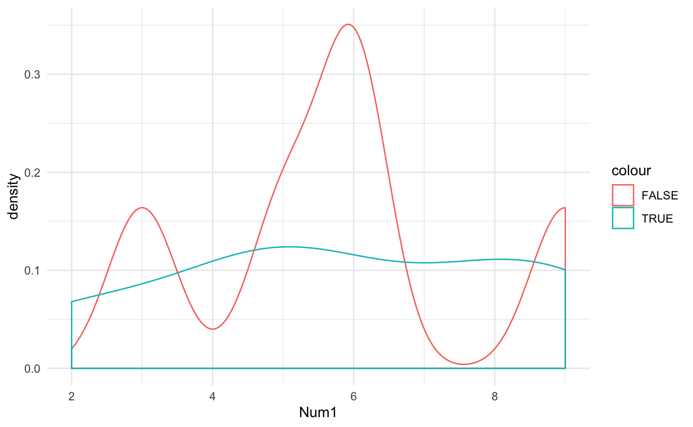
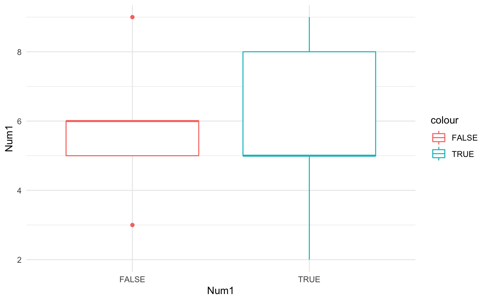
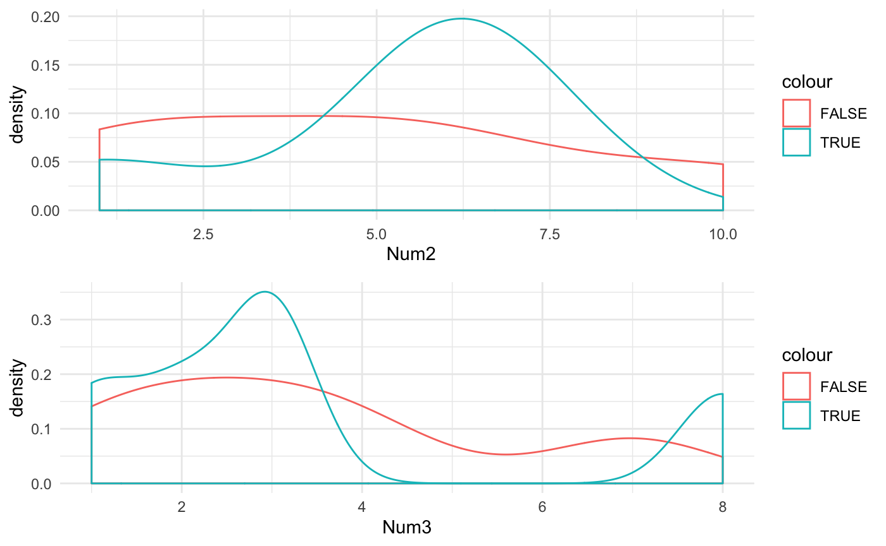

library(expldata)
#> Warning: replacing previous import 'ggplot2::theme_grey' by
#> 'huxtable::theme_grey' when loading 'expldata'Exploring data is a crucial first step in many data science and machine learning processes. This activity allows the user to understand the data that they are working with and formulate the types of questions that the data can help address. However, even though exploratory data analysis is a necessary activity, there is not a consistent definition of what the process entails. Not having a “standard” regiment allows scientists to adapt their exploration specifically to the data, but also can lead to inconsistencies between users and can become more labor intensive than necessary. This package is a collection of functions which are specfic to data exploration as well as a function that performs multiple functions with a single command. The goal of these functions is to perform the basis of exploratory data analysis including: detecting early mistakes (e.g. data load issues), understanding the underlying data structure, identifying important variables, detecting possible outliers, and the distribution types of numeric variables. While most of the output from the functions contained in this package are numeric in nature, there is an additional function that returns visual examples to assist in the exploration.
The package comes with a pre-loaded dataframe example to work through the different functions. ExampleData is a basic data frame that contains 5 int variables, 1 factor variable, and 1 character variable.
set.seed(100)
example_df <- data.frame(replicate(5,sample(0:10, 10, replace = TRUE)))
example_df$X10 <- as.factor(c(TRUE, FALSE, FALSE, TRUE, TRUE, FALSE, FALSE, TRUE, TRUE, FALSE))
example_df$X11 <- c("a","b","c","d","a","b","c","d","a","b")
colnames(example_df)<- c("Num1","Num2","Num3","Num4","Num5","Fact1","Char1")
str(example_df)
#> 'data.frame': 10 obs. of 7 variables:
#> $ Num1 : int 9 6 5 2 8 9 6 5 5 3
#> $ Num2 : int 6 5 1 6 6 6 10 7 1 2
#> $ Num3 : int 2 7 1 8 1 2 3 3 3 4
#> $ Num4 : int 10 6 8 10 3 1 5 6 0 10
#> $ Num5 : int 5 8 8 8 5 7 10 6 0 8
#> $ Fact1: Factor w/ 2 levels "FALSE","TRUE": 2 1 1 2 2 1 1 2 2 1
#> $ Char1: chr "a" "b" "c" "d" ...The basic functionality of ColValid will take a matrix-like R object and compare the number of columns with a user-supplied number of the number of columns that they were expecting. This function is used to validate that the data loaded the expected number of variables (columns) and is one of the crucial steps in identifying possible errors early in the process.
ColValid produces three types of output: (1) If no expected column amount is supplied, the function will return the a statement of the number of columns. (2) If the expected column number is provided, it will compare with actual column count and provide an “english-version” statement. (3) If verbose is set to FALSE, then the ColValid function will return a dataframe containing the number of columns and a logical match value. No Expected Column Number Supplied
Expected Column Number Supplied
ColValid(ExampleData, 7)
#> [1] "MATCH: The number of columns: 7 matches the expected count"
ColValid(ExampleData, 2)
#> [1] "WARNING: The number of columns: 7 does not match the expected count of 2"Verbose set to FALSE
The basic functionality of ColValid will take a matrix-like R object and display the class of each variable in the passed object. This function is used to gain a better understanding of the classes of variables that are contained in the object and which may need to be re-classed. ColType produces two types of output: (1) If verbose is set to TRUE (default value) then the function will display all column names and the class of each. (3) If verbose is set to FALSE, then the ColType function will return a dataframe containing the column names and their respective classes.
Default Results
ColType(example_df)
#> Column Object Types
#> Column Col_Types
#> ───────────────────────
#> Num1 integer
#> Num2 integer
#> Num3 integer
#> Num4 integer
#> Num5 integer
#> Fact1 factor
#> Char1 characterVerbose = FALSE
The basic functionality of Out will take a matrix-like R object and display the the count of any value in the column that falls outside the inner fence and falles outside tht outer fence. This function is used to identify possible issues within the data that may need to be mitigated prior to using them in a model.
Out produces two types of output: (1) If verbose is set to TRUE (default value) then the function will display all column names, the number of value inner outliers and the number of values that areouter outliers. (3) If verbose is set to FALSE, then the Out function will return a dataframe containing the same results. Note: This will only return a count if the column contains numeric values. If non-numeric, the table/dataframe will contain no value. Default Results
Out(example_df)
#> Inner and Outer Fence Outlier Counts
#> Column Inner_Outliers Outer_Outliers
#> ────────────────────────────────────────────
#> Char1
#> Fact1
#> Num1 0 0
#> Num2 0 0
#> Num3 2 0
#> Num4 0 0
#> Num5 1 0This shows that 2 values in the Num3 and 1 value in the Num5 columns fall outside of the inner fence (1.5 * 1st and 3rd quartile). There are no values which fall outside the outer fences (3 * 1st and 3rd quartile)
The FindRowNA function will locate any missing value in the object passed to the function. The function will display the row, count, and percent of total row for each missing value. If verbose is set to FALSE, the function will return a dataframe of the results. Using this function will identify any row that can potentially be removed from the data set due to a high percentage of missing values. If the object does not contain any missing values, then the statement will indicate that all values are present. This function will only detect NA values as missing. Any dataframe that uses a different character to designate missing values will need to be modified for the function to return the correct results No missing values
**Multiple Missing Values
example_NA <- example_df #Creating a copy of our example
example_NA[2,2] <- NA
example_NA[2,3] <- NA #Removing two values from the table
FindRowNA(example_NA)
#> Rows with Missing Values
#> Row NA_Count Percent_of_Row
#> ─────────────────────────────────────
#> 2 2 20.000 %The results show that row 2 had 2 missing values that represented 20% of that row’s total values
The FindColNA function will return any missing data present in the dataset. Similar to FindRowNA in results but takes the perspective of columns. However, unlike FindRowNA, FindColNA returns every column (even if all data is present) but will display 0’s instead. The NA_Percent value represents the percent of NA’s compared to the total column count.
No Missing Values
FindColNA(example_df)
#> Missing Values by Column
#> Column NA_Count NA_Percent
#> ──────────────────────────────────
#> Num1 0 0.00 %
#> Num2 0 0.00 %
#> Num3 0 0.00 %
#> Num4 0 0.00 %
#> Num5 0 0.00 %
#> Fact1 0 0.00 %
#> Char1 0 0.00 %Missing Values
FindColNA(example_NA) #Using the example dataframe created in the FindRowNA example
#> Missing Values by Column
#> Column NA_Count NA_Percent
#> ──────────────────────────────────
#> Num1 0 0.00 %
#> Num2 1 10.00 %
#> Num3 1 10.00 %
#> Num4 0 0.00 %
#> Num5 0 0.00 %
#> Fact1 0 0.00 %
#> Char1 0 0.00 %The SWNormality function applies the Shapiro-Wilk test for normality and displays the resulting p-values as well as a statement that the distribution of the column is possibly normal or not normal. The test is sensitive to both missing values and sample size. Small samples will typically have a p-value indicating that the distribution is normal. Additionally, missing values will also affect the results and typically show as non-normal. It is reccomended to use additional tests to truly determine the type of distribution (e.g. visual assessment). If verbose is passed as FALSE, a dataframe of the restuls will be returned instead of displaying to the console.
SWNormality(example_df)
#> Normality of Numeric Columns
#> Column SW_PVal Normal_Dist
#> ──────────────────────────────────
#> Num1 0.459 TRUE
#> Num2 0.172 TRUE
#> Num3 0.0565 TRUE
#> Num4 0.271 TRUE
#> Num5 0.0665 TRUEWhile these values are showing as normally distributed, it is most likely due to the small sample size. Additional tests are reccomended.
The RowDup function will identify if any row in a dataframe contains duplicate values. This is important for exploratory data analysis to determine if the data set contains enough variability and may suggest that the sample size is too small. The result of the default function (verbose = TRUE), the table displayed will show the number of duplicatated rows, the percent of the duplicates compared to the total number of rows, and the count of unique rows contained in the dataset. This function counts the initial row as unique and any additional identical row as duplicate.
The CountVal function offers a view into duplicate values but from a column perspective. This variable-specific view helps determine any potential trends or issues within the dataset. The function will display a table of the column name, the count of unique values and a count of duplicated values by column. If the parameter “verbose” is set to FALSE, thenthe function will return a dataframe of the results. Similar to the RowDup function, CountVal will count the first instance of a duplicated value within a column as a unique value and the second instance as a duplicate.
The RowSample function takes a matrix-like R object and a specified number of rows to return. Similar to the Head/Tail functions; however, instead of returning the top/bottom portion of a dataset, RowSample returns random rows. Using all three functions can provide the user with a great understanding of the values that are contained in the dataset. Since the returned rows can include any in the dataset, the results also contain the row lable to help locate them later. Since head() and tail() display only certain portions, some anormalities that reside in the middle may go unnoticed. By providing a random sample of desired rows could identify potential data problems early in the process. The default number of rows to return is 5 but it can be overridden as desired.
| Num1 | Num2 | Num3 | Num4 | Num5 | Fact1 | Char1 |
| 9 | 6 | 2 | 1 | 7 | FALSE | b |
| 2 | 6 | 8 | 10 | 8 | TRUE | d |
The Rng function takes a dataframe object and returns the minimum, maximum, and spread of each column passed. If the dataframe contains a non-numeric variable, then the table/dataframe result will contain blank values (NA).
The OutsideRange function is a simple function that takes a value, an upper bound, and a lower bound. It compares the value and determines if it falls outside of the supplied limits. If it is greater than or less than the limits/boundries then the function returns the value. OutsideRange is suitable for sapply,apply applications.
The plots function can be used with lapply to generage a list of ggplot2 density (ptype = 1) or box (ptype = 2) plots and passing the dependent variable dataframe location and the column names. Using density and box plot plots to visualize the data is another step in a complete and robust exploratory data analysis. The boxplot option will create the plot using a single variable but will group/color by the colorData designation if used. Plots work with the Multiplot (see below) function to display various plots in the list to the Viewer. The parameters that the function takes include: colorData = column designation for the dependent variable ptype = numerical representation for either density (1) or boxplots (2) Density Plots
plots_density <- lapply(colnames(example_df), Plots, x = example_df, colorData = example_df$Fact1, ptype = 1 )
Multiplot(plotlist = plots_density[1])BoxPlots
plots_density <- lapply(colnames(example_df), Plots, x = example_df, colorData = example_df$Fact1, ptype = 2 )
Multiplot(plotlist = plots_density[1])
The CreateHux function is a simple function that takes a dataframe and a title then returns a huxtable type object. This object can then be modified using huxtable acceptable formatting commands. You can use the huxtable command “print_screen(huxtable object)” to display the table.
ht_example <- CreateHux(example_df, "Example Huxtable")
huxtable::print_screen(ht_example)
#> Example Huxtable
#> Num1 Num2 Num3 Num4 Num5 Fact1 Char1
#> ────────────────────────────────────────────────────
#> 9 6 2 10 5 TRUE a
#> 6 5 7 6 8 FALSE b
#> 5 1 1 8 8 FALSE c
#> 2 6 8 10 8 TRUE d
#> 8 6 1 3 5 TRUE a
#> 9 6 2 1 7 FALSE b
#> 6 10 3 5 10 FALSE c
#> 5 7 3 6 6 TRUE d
#> 5 1 3 0 0 TRUE a
#> 3 2 4 10 8 FALSE b
#>
#> Column names: Num1, Num2, Num3, Num4, Num5, Fact1, Char1The EDA function is the multi-purpose tool of this package which is the main function of the package. EDA will perform every test contained in the package and display the results to the screen in an easy to read table. Additionally, if the plots parameter is set to TRUE, the function will return a list of ggplot2 density plots. An additional feature is that the function will determine if there is a single factor variable and assume that it is the dependent variable. This assumption will adjust the density plots to group and color code each of the factor levels for each plot. The plots can be displayed using the multiplot function also included in the package.
examplePlots <- EDA(example_df, plots = TRUE)
#> Name of Object: example_df
#> Class of Object: data.frame
#>
#> Data Loading Information
#> rows row_match cols col_match
#> ───────────────────────────────────────
#> 10 7
#>
#>
#>
#> Sample
#> Num1 Num2 Num3 Num4 Num5 Fact1 Char1
#> ────────────────────────────────────────────────────
#> 5 7 3 6 6 TRUE d
#> 5 1 1 8 8 FALSE c
#> 9 6 2 1 7 FALSE b
#> 2 6 8 10 8 TRUE d
#> 5 1 3 0 0 TRUE a
#>
#> Rows with Missing Values
#> Row NA_Count Percent_of_Row
#> ─────────────────────────────────────
#> 0 0 0.00%
#>
#> Rows with Duplicate Values
#> Duplicate_Rows Percent_Duplicate Unique_Rows
#> ────────────────────────────────────────────────────
#> 0 0 10
#>
#>
#> Column Details
#> Column Col_Type NA_Count NA_Perce Unique_V Duplicat Min_Valu
#> s nt alues ed_Value e
#> s
#> ────────────────────────────────────────────────────────────────────────────
#> Char1 characte 0 0.00 % 4 6
#> r
#> Fact1 factor 0 0.00 % 2 8
#> Num1 integer 0 0.00 % 6 4 2
#> Num2 integer 0 0.00 % 6 4 1
#> Num3 integer 0 0.00 % 6 4 1
#> Num4 integer 0 0.00 % 7 3 0
#> Num5 integer 0 0.00 % 6 4 0
#>
#>
#> Column Min_Valu Max_Valu Spread SW_PVal Normal_D Inner_Ou
#> e e ist tliers
#> ─────────────────────────────────────────────────────────────────────────
#> Char1
#> Fact1
#> Num1 2 9 7 0.459 TRUE 0
#> Num2 1 10 9 0.172 TRUE 0
#> Num3 1 8 7 0.0565 TRUE 2
#> Num4 0 10 10 0.271 TRUE 0
#> Num5 0 10 10 0.0665 TRUE 1
#> 7/8 columns shown.The multiplot function is one that was adapted from Winston Chang in his R Graphics Cookbook (http://www.cookbook-r.com/Graphs/Multiple_graphs_on_one_page_(ggplot2)/). This function will print several plots stored in a list and display them to the viewer. The multiplot function can also accept addition grid parameters if the user would like to customize the displayed output. 